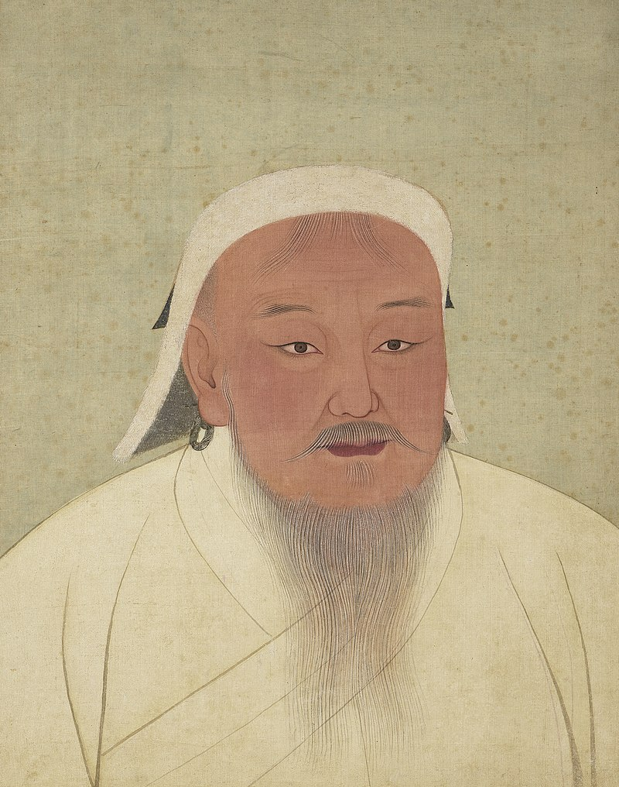

Império Mongol
O Império Mongol dos séculos XIII e XIV foi o maior império de terras contíguas da história e o segundo maior império em área, perdendo apenas para o Império Britânico. Originário da Mongólia no Leste Asiático, o Império Mongol chegou a se estender da Europa Oriental e partes da Europa Central até o Mar do Japão, além de também para o norte, em partes do Ártico; para o leste e para o sul no subcontinente indiano, no sudeste da Ásia continental e no planalto iraniano; e para o oeste até o Levante e as montanhas dos Cárpatos. O Império Mongol surgiu da unificação de várias tribos nômades na pátria mongol sob a liderança de Genghis Khan (1162-1227) a quem um conselho proclamou como o governante de todos os mongóis em 1206. O império cresceu rapidamente sob seu domínio e de seus descendentes, que enviaram exércitos invasores em todas as direções. O vasto império transcontinental conectou o Oriente com o Ocidente, o Pacífico com o Mediterrâneo, em uma Pax Mongolica forçada, permitindo a disseminação e troca de comércio, tecnologias, mercadorias e ideologias em toda a Eurásia.

Genghis Khan, Museu do Palácio Nacional em Taipei, Taiwan
O império começou a se dividir devido a guerras de sucessão, enquanto os netos de Genghis Khan disputavam se a linha real deveria seguir de seu filho e herdeiro inicial Ögedei ou de um de seus outros filhos, como Tolui, Chagatai ou Jochi. Os toluidas prevaleceram após um expurgo sangrento das facções ogedeida e chagataida, mas as disputas continuaram entre os descendentes de Tolui. A principal razão para a divisão foi a disputa sobre se o Império Mongol se tornaria um império cosmopolita e sedentário ou se permaneceria fiel ao estilo de vida nômade mongol baseado nas estepes. Após a morte de Möngke Khan (1259), conselhos rivais curultai elegeram simultaneamente diferentes sucessores, os irmãos Ariq Böke e Kublai Khan, que lutaram entre si na Guerra Civil Toluida (1260-1264) e também enfrentaram desafios dos descendentes de outros filhos de Genghis. Kublai tomou o poder, mas a guerra civil se seguiu e ele não recuperou o controle das famílias Chagatayid e Ögedeid.
Durante os reinados de Gêngis e Ögedei, os mongóis sofreram derrotas ocasionais quando um general menos habilidoso recebeu o comando. Os mongóis siberianos tumedas derrotaram as forças mongóis sob o comando de Borokhula por volta de 1215-1217; Jalal al-Din derrotou Shigi-Qutugu na Batalha de Parwan em 1221; e os generais Jin Heda e Pu'a derrotaram Dolqolqu em 1230. Em cada caso, os mongóis retornaram logo depois com um exército muito maior liderado por um de seus melhores generais e foram, invariavelmente, vitoriosos. A Batalha de Ain Jalut na Galileia em 1260 marcou a primeira vez que os mongóis não voltariam para vingar imediatamente uma derrota, devido a uma combinação da morte de Möngke Khan em 1259, a Guerra Civil Toluida entre Ariq Böke e Kublai Khan, e Berke Khan da Horda de Ouro atacando Hulagu Khan na Pérsia. Embora os mongóis tenham lançado muito mais invasões ao Levante, ocupando-o brevemente e invadindo até Gaza após uma vitória decisiva na Batalha de Wadi al-Khaznadar em 1299, eles se retiraram devido a vários fatores geopolíticos.
Na época da morte de Kublai em 1294, o Império Mongol havia se dividido em quatro canatos ou impérios separados, cada um perseguindo seus próprios interesses e objetivos: o Canato da Horda Dourada no noroeste, o Canato de Chagatai na Ásia Central, o Ilcanato no sudoeste e a dinastia Yuan no leste, baseada na atual cidade de Pequim. Em 1304, os três canatos ocidentais aceitaram brevemente a suserania nominal da dinastia Yuan, mas em 1368 a dinastia chinesa Ming assumiu a capital mongol. Os governantes Genghisid do Yuan recuaram para a pátria mongol e continuaram a governar lá como a dinastia Yuan do Norte. O Ilcanato se desintegrou entre 1335 e 1353. A Horda de Ouro havia se transformado em canatos concorrentes no final do século XV e foi derrotada e expulsa da Rússia em 1480 pelo Grão-Principado de Moscou, enquanto o Canato de Chagatai durou, de uma forma ou de outra, até o ano de 1687.

O Velho Mundo na véspera das invasões mongóis, c. 1200